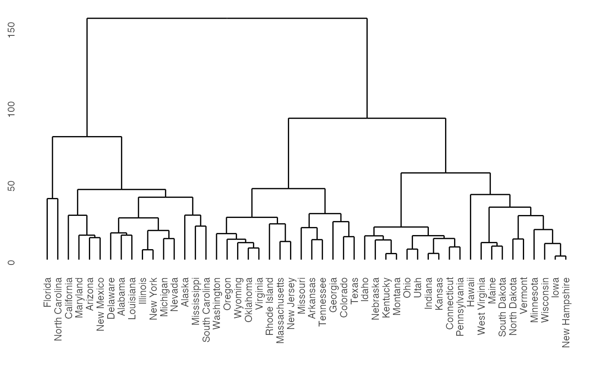
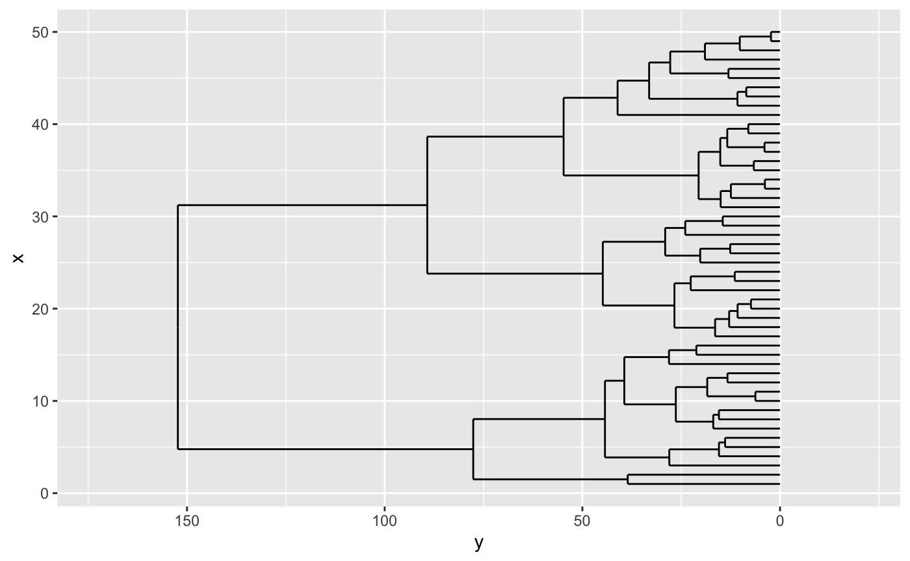
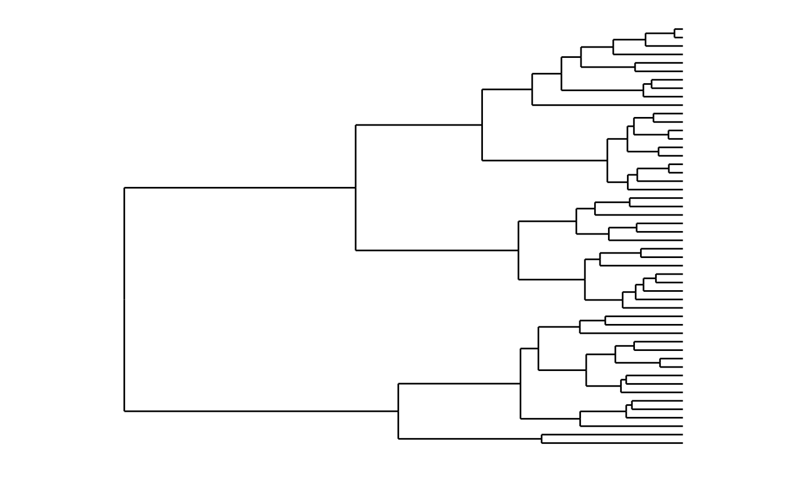
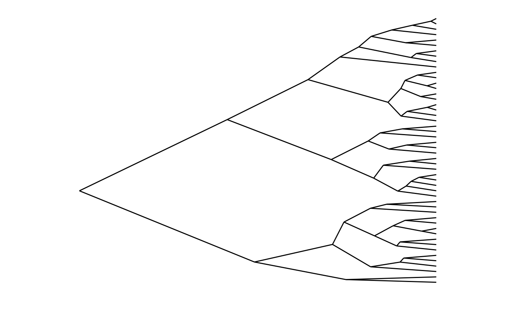
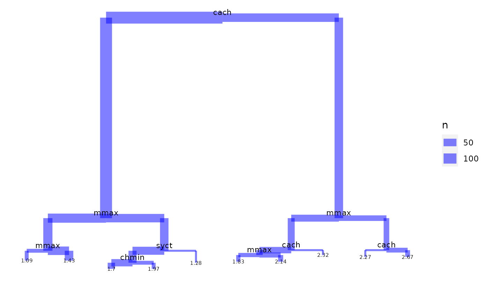
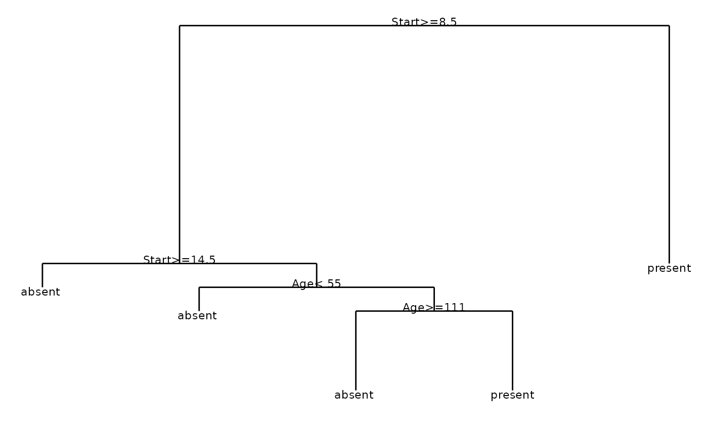
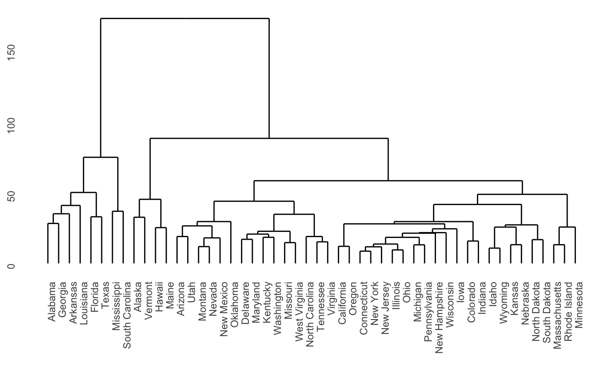

ggdendro package to plot dendrogramsThe ggdendro package makes it easy to extract dendrogram and tree diagrams into a list of data frames. You can then use this list to recreate these types of plots using the ggplot2 package.
The ggdendro package provides a general framework to extract the plot data for dendrograms and tree diagrams.
It does this by providing generic function dendro_data() that extracts the appropriate segment and label data, returning the data as a list of data frames.
You can access these data frames using three accessor functions:
The package also provides two convenient wrapper functions:
ggdendrogram() is a wrapper around ggplot() to create a dendrogram using a single line of code. The resulting object is of class ggplot, so can be manipulated using the ggplot2 tools.theme_dendro() is a ggplot2 theme with a blank canvas, i.e. no axes, axis labels or tick marks.The ggplot2 package doesn’t get loaded automatically, so remember to load it first:
ggdendrogram() wrapperThe ggdendro package extracts the plot data from dendrogram objects. Sometimes it is useful to have fine-grained control over the plot. Other times it might be more convenient to have a simple wrapper around ggplot() to produce a dendrogram with a small amount of code.
The function ggdendrogram() provides such a wrapper to produce a plot with a single line of code. It provides a few options for controlling the display of line segments, labels and plot rotation (rotated by 90 degrees or not).
hc <- hclust(dist(USArrests), "ave") ggdendrogram(hc, rotate = FALSE, size = 2)

The next section shows how to take full control over the data extraction and subsequent plotting.
dendro_data()
The hclust() and dendrogram() functions in R makes it easy to plot the results of hierarchical cluster analysis and other dendrograms in R. However, it is hard to extract the data from this analysis to customize these plots, since the plot() functions for both these classes prints directly without the option of returning the plot data.
model <- hclust(dist(USArrests), "ave") dhc <- as.dendrogram(model) # Rectangular lines ddata <- dendro_data(dhc, type = "rectangle") p <- ggplot(segment(ddata)) + geom_segment(aes(x = x, y = y, xend = xend, yend = yend)) + coord_flip() + scale_y_reverse(expand = c(0.2, 0)) p

Of course, using ggplot2 to create the dendrogram means one has full control over the appearance of the plot. For example, here is the same data, but this time plotted horizontally with a clean background. In ggplot2 this means passing a number of options to theme. The ggdendro packages exports a function, theme_dendro() that wraps these options into a convenient function.
p + coord_flip() + theme_dendro() #> Coordinate system already present. Adding new coordinate system, which will replace the existing one.

You can also draw dendrograms with triangular line segments (instead of rectangular segments). For example:
ddata <- dendro_data(dhc, type = "triangle") ggplot(segment(ddata)) + geom_segment(aes(x = x, y = y, xend = xend, yend = yend)) + coord_flip() + scale_y_reverse(expand = c(0.2, 0)) + theme_dendro()

The tree() function in package tree creates tree diagrams. To extract the plot data for these diagrams using ggdendro, you use the the same idiom as for plotting dendrograms:
if(require(tree)){ data(cpus, package = "MASS") model <- tree(log10(perf) ~ syct + mmin + mmax + cach + chmin + chmax, data = cpus) tree_data <- dendro_data(model) ggplot(segment(tree_data)) + geom_segment(aes(x = x, y = y, xend = xend, yend = yend, size = n), colour = "blue", alpha = 0.5) + scale_size("n") + geom_text(data = label(tree_data), aes(x = x, y = y, label = label), vjust = -0.5, size = 3) + geom_text(data = leaf_label(tree_data), aes(x = x, y = y, label = label), vjust = 0.5, size = 2) + theme_dendro() } #> Loading required package: tree

The rpart() function in package rpart creates classification diagrams. To extract the plot data for these diagrams using ggdendro follows the same basic pattern as dendrograms:
if(require(rpart)){ model <- rpart(Kyphosis ~ Age + Number + Start, method = "class", data = kyphosis) ddata <- dendro_data(model) ggplot() + geom_segment(data = ddata$segments, aes(x = x, y = y, xend = xend, yend = yend)) + geom_text(data = ddata$labels, aes(x = x, y = y, label = label), size = 3, vjust = 0) + geom_text(data = ddata$leaf_labels, aes(x = x, y = y, label = label), size = 3, vjust = 1) + theme_dendro() } #> Loading required package: rpart

The cluster package allows you to draw agnes and diana diagrams.
if(require(cluster)){ model <- agnes(votes.repub, metric = "manhattan", stand = TRUE) dg <- as.dendrogram(model) ggdendrogram(dg) model <- diana(votes.repub, metric = "manhattan", stand = TRUE) dg <- as.dendrogram(model) ggdendrogram(dg) } #> Loading required package: cluster
